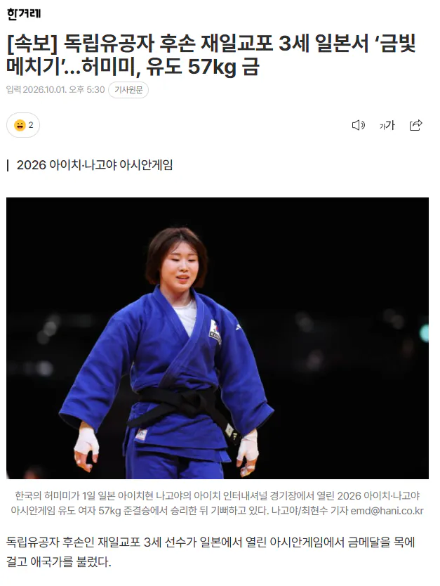
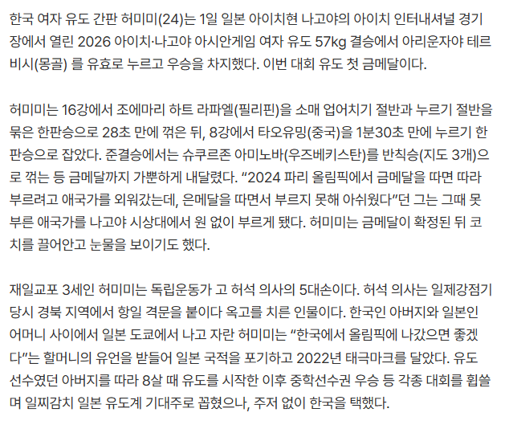

일본 국대 포기하고
독립유공자의 후손이라며 한국 선택한 선수 ㄷㄷ


일본 국대 포기하고
독립유공자의 후손이라며 한국 선택한 선수 ㄷㄷ
정보) '말이 되는 소리를 해!!!!' 짤방으로 유명한 조선시대 관리 허조의 후손이라고 합니다.
전혀 미미하지 않은 미미선수!
허미
아이고...이제 일본 땅 못 밟겠네
가면 무슨 일 생길 줄 알고
메침
맛있는거 먹고 올듯 어차피 누군지도몰라 ㅋㅋㅋ
걱정 없는 게, 이번 나고야 사건 사고 터졌을 때 반응 보려고 가니까
일본 새끼들 아시안 게임 조또 관심 없더라. 이번엔 그나마 개최국이었고, 지들이 병크 터뜨린 입장이라서 조금 관심 가진 편이고
원래는 거의 무슨 유스 선수권 대회보다도 관심 없는 수준이라던데
우리나라도 그렇고 이제 다 관심이 없구먼
우리는 그래도 관심 많은 편임. 중계는 하잖아. 일본은 인기 종목 몇 개만 중계한다고 함
근데 또 올림픽 같이 지들도 관심 많은 대회에서 일본 상대로 이기고 그랬으면 음습한 방식으로 귀찮게 했을 듯
저는 금빛두루치기요